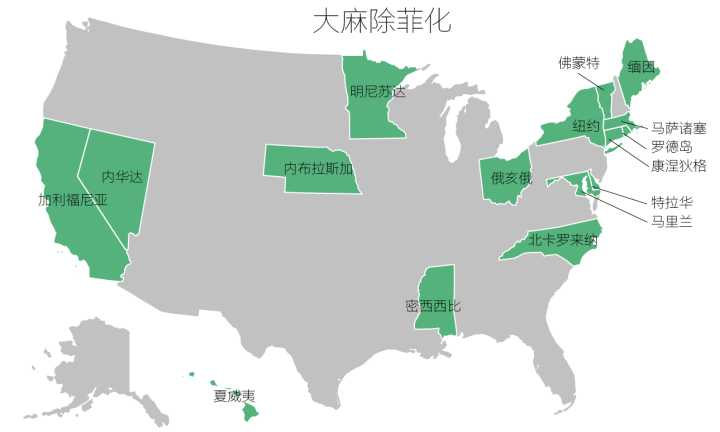

合法种植州
- 阿拉斯加：21岁以上，最多6棵（最多3棵成熟）
- 亚利桑那：医生指定有需要的病人（居住地离有药医院超过25miles）可以种12棵。
- 加州：21岁以上，每个家庭最多6棵。医生指定有需要的病人和照顾人（无居住限制）可种6棵成熟或者12棵不成熟。有医嘱情况可以种植更多。
- 科罗拉多：每个成年居民可以种6棵（最多3棵成熟或者开花）。每家最多12棵（不论住户数量）。
- DC：21岁以上， 最多6棵（最多3棵成熟）（无每户限制）。
- 缅因：居民。每户最多6棵成熟和12棵不成熟（个人使用）。种子数量不限。必须在封闭室内种植。市政府可批准每家种植18棵。
- 麻省：21岁以上，6棵成熟。室内种植。
- 内华达：21岁以上， 每家最多12棵（居住地离零售店超过25miles）。
除非化（抓得不严的州）

种植
- 光照：HID grow light （包括Metal halide和High pressure sodium）。 Metal halide在植物阶段用。High pressure sodium在开花阶段用。
- 通风：屋顶装exhaust fan。 另一端地面装空气过滤器出气口。
- 温度：70F到85F（indica strains品种要控制温度接近70F，其他品种温度要接近85F）。
- PH值：土壤6~7（如用水培养则5.5~6.5）。
- 培养方式：新手土培，老手水培（生长速度快，产量高，但对添加养料次数和剂量要求高）。